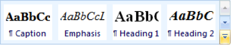

Once you finish formatting your document, it should look similar to this.
Task 1: Sections and Page Layout
Add a section break immediately before the heading "I.Introduction".
Section Breaks
A document can be diveded into Sections using Section Breaks. Sections are used to create layout or format changes. For example, one section could contain a full page centered title, while another could span the body text across multiple columns.
Individual sections can have these formats changed:
paper size and paper source
page orientation
margins
page borders
headers and footers
page numbering
footnotes and endnotes
number of columns
To insert a section break:
Place the text cursor where you would like the break to be inserted (text after the cursor will be placed into the new section).
Click the Breaks drop-down menu is in the Page Layout tab.
Select the desired section break. Be careful not to pick a Page Break (the top 3 selections), as this will not create a new section. For most cases, you will want to create the section on a new page.
Change the page layout of the first section (the title page) to increase the size of the vertical margins and vertically center its content.
Page Setup
Open the Page Setup window, found in the Page Setup section of the "Page Layout" tab. This window contains options for changing print Margins, Paper size, and Layout. The Vertical Alignment drop down is found under the Layout tab, in the Page section.
Take note of the Apply to:, which determines where the page formats will take effect. The default, This section, applys the format to the section the text cursor is currently in.
Add automatically-generated page numbers to the second (body) section.
Task 2: Basic Document Structure and Styling
Apply a first-line indent to all of the content in the document. Do not apply to the first section.
Indents and Line Spacing
You are probably used to indenting the start of new paragraphs by hitting the tab key on your keyboard, but you can have this indent added automatically with all new and existing paragraphs:
Highlight all the text in the document by choosing the Select All option in the Select dropdown box, or simply with the hotkey control+a.
We can now apply paragraph formatting to the entire document. Open the Paragraph Settings window (see diagram)
To indent only the first line of every paragraph, choose First Line in the Special drop-down menu, in the Indentation section, then choose a size.
The spacing section contains options for adding blank space between lines. The Before and After options create space before and after paragraphs. The Line Spacing drop-down creates space after every line.
Once you are happy with your changes, click OK
Set the line spacing to 1.5 lines for the entire document.
Open the navigation pane (it is empty for now).
How?
The navigation pane checkbox is found in the View tab. It provides an overview of the document.
Apply styles to the titles and headings to make them stand out from the body text and appear in the navigation pane.
Styles
In MS - Word, a style is a collection of formats saved together and given a name. Apply the same style to several paragraphs and they will all match. Once a style has been defined in a document, it can be used in several places to quickly ensure consistency of formatting. A style can later be re-defined to have a different appearance, so that all text with that style will automatically take the new appearance.
A style can include:
font formatting (font, size, bold/italic/etc, colour)
paragraph formatting (alignment, indents, space within and between, page break control etc.)
tab stop positions
borders and shading
bullets and numbering
language
A number of useful styles are built-in with MS Word, and these are available for immediate use.
A style is most easily applied using the Styles Gallery – found in the Styles group of the Ribbon’s Home tab. Each style is displayed with a small preview such as
A few popular styles are displayed, and others can be found by scrolling the list.
Pausing the mouse over a style in this gallery will display the current (selected) text as it would look with this style applied.
If the style seems suitable, you can click the style name to apply it permanently.
For headings, sub-headings and minor headings, use the styles called Heading1, Heading2 and Heading3 respectively. When all headings are formatted using these styles, you can be sure that equivalent headings will match – for example, all Heading2 paragraphs will look the same.
When complete, your navigation pane should look like this:
There are several lists in the document that are currently formatted as indented paragraphs – convert them into actual numbered (or bulleted) lists.
Modify the three hyphenated lists to use round bullets.
Bullets and Numbering
Highlight each list, then click the Bullets or Numbering buttons in the Paragraph section of the "Home" tab. Word will usually do a pretty good job of detecting bullet types and sub-lists.
The bullet style can be modified by clicking the down arrow next to the applicable list button.
The Increase and Decrease Indent buttons move the selected list item up or down the list hierarchy, or indent the entire list left or right if the top item is selected.
Create an attractive visual theme.
The Design Tab
The Design tab contains Themes, Style Sets, Colors and Fonts
Notice how changing any of these options automatically changes the formatting of all the text in the document. This is because it is modifying the Styles you applied to that text.
Be careful not to go overboard with these!
Task 3: Generated Content
Add captions to the 6 figures in the document (1 table and 5 images). The captions, in order, should be:
Bluetooth Technical Details
PKES Key FOB Coverage
Up and Down Conversion and Modulation
Wave Protocol Stack
Explicit Certificate
Implicit Certificate
Figure Captions
With the figure selected (click on it), click the Insert Caption button in the Captions section under the References tab
Create a new section at the end of the document, and insert an automatically-generated Table of Figures into it.
Table of Figures
The Table of Figures is a list of all captions you’ve created in the document, along with its page number and a link.
Make sure the Caption label is set to Figure.
Use the Source Manager to add records for the following sources:
Survey on Security Threats and Protection Mechanisms in Embedded Automotive Networks
Conference Publication Name
IEEE/IFIP International Conference on Dependable Systems and Networks Workshop (DSN-W)
City
Budapest
Publisher
IEEE
Type
Journal Article
Author
Z. Fellow
Title
Defending Connected Vehicles against Malware: Challenges and a Solution Framework
Journal Name
Internet of Things Journal IEEE
Issue
99
Year
2014
Source Manager
The References tab contains tools for automatically logging and citing your sources, and can even generate a fully formatted bibliography.
Click Manage Sources to open the Source Manager window
Click New to create a new source, then simply fill out the fields.
When all your sources have been added, close the Source Manager and click the Bibliography dropdown to generate a reference list at your text cursor.
If additional sources have been added since generating a reference list, click the reference list, and then click Update Citations and Bibliography to add the new sources to the list.
Insert an automatically-generated reference list at the end of the document.
Change the citation format to MLA.
Add another section break immediately before the heading "I. Introduction", then insert an automatically-generated Table Of Contents into the new section (between the title page and the main body).
Task 4: Footnotes and Cross-references
The acronym PKES is used in section II.B. but never defined.
Add a footnote to its first use to give the expanded form of this acronym: "Passive Keyless Entry and Start System" and a link to the Wikipedia article that describes the technology (https://en.wikipedia.org/wiki/Smart_key).
Find the three figure references (in section II.E) and replace them with live cross-references.
Cross-References
Cross-references are in-line links pointing to a figure, similar to citations. EX: "[...] using the architecture illustrated in Figure 1." They are found in the References tab.
Task 5: Finishing Touches and Review
Give a run-through of your document and give it some polish. Here are some ideas you can consider:
Apply text formatting to the Title Page.
Examples
Add paragraph spacing to the author entries to give them some breathing room.
Center horizontal alignment
Make the 'A. Different Computers' section (under the I. Introduction ) into a 2-column layout. Note: 'The elements of an ECU' should lead the second column.
Apply special formatting to the abstract paragraph.
Examples
Add left and right indents to make it narrower.
Italics.
Hanging indent.
Modify the default styles or create your own.
Custom Styles
To modify an existing style (thus affecting all text using that style):
Apply additional formatting rules to some text with that style.
Select it.
Right-click the style in the Styles section of the ribbon, and click "Update Style to Match Selection".
To create a brand new style:
Add the desired formatting to some text.
Select it, then right-click it.
Click the Styles box that appears above the context menu.
Choose "Create a Style".
Create a new section at the end of the document and write a small paragraph describing what new things you have learned in this lab. Also describe which parts you are still finding difficult to understand and would like to see more examples in class or receive feedback about.
Submission
Submit your completed document to the Lab 2 dropbox on D2L.
NOTE: This assignment is to be done individually. You can
help one another with problems and questions, but in the end everyone must
do their own assignment.